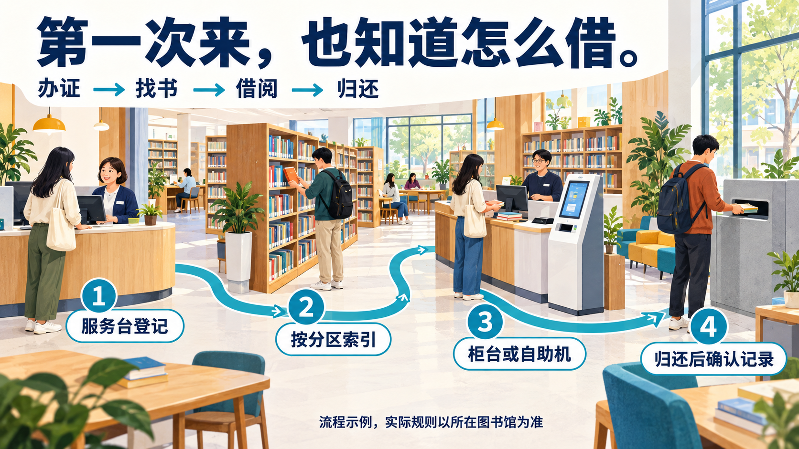

科技 · 产品发布
原创桌面终端，主张、功能与产品图一起讲清。

三名子智能体并行制作：产品发布、制造业流程、科研数据、课程说明、品牌故事、公共服务。来源案例图、原提示词和转译说明都可查看。
此处是六个行业各一张的旧版单页探索，不是六套完整演示。查看新版六套完整概念：共29页。旧科研单页已重做，原件保留作对照。
原创桌面终端，主张、功能与产品图一起讲清。
设备插画与有向回用路径，表达主线和支路。

单系列四点曲线，数值、单位与证据边界明确。

读图、拆解、实作，用纸本练习呈现学习路径。

包装结构、材质与使用情境，组织品牌提案。

把办证到归还的四个动作放进同一个可读场景。
